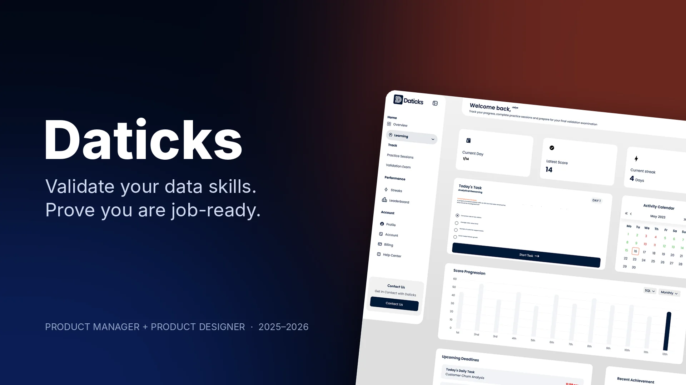

Product design · Data-skills validation platformClient work
Daticks
Validate your data skills. Prove you're job-ready.

The problem
Data analysts finish courses but still can't prove they are ready for the job. Certificates show attendance, not ability, so hiring managers can't tell who can actually analyse data.
What I did
- Ran research with 30+ analysts, learners and hiring managers to define what 'job-ready' means
- Shaped the product: a guided 14-day track of real-scenario challenges ending in a proctored validation exam and a shareable competency report
- Designed the marketing site, learner dashboard, daily challenge, instant feedback, exam flow, streaks, profile, settings and help centre
- Built the design system and worked with engineers through handoff and QA
30+Analysts in research
14 daysGuided track to the exam
4Validation tracks: Excel, SQL, Power BI, Analytical reasoning
How it came together
- 01
Discover
Interviews with analysts and hiring managers on how skills are judged today.
- 02
Define
One promise: practise on real scenarios, then prove it with one exam and one report.
- 03
Design
Marketing site, learner dashboard, challenges, exam and streaks on one system.
- 04
Ship
Handoff, design QA and iteration with the engineering team.
The screens
9 boards from the Figma file
Want something like Daticks?
Tell me what you're building. I reply within a day with a fixed quote.